Weft: the company harness for D2C brands
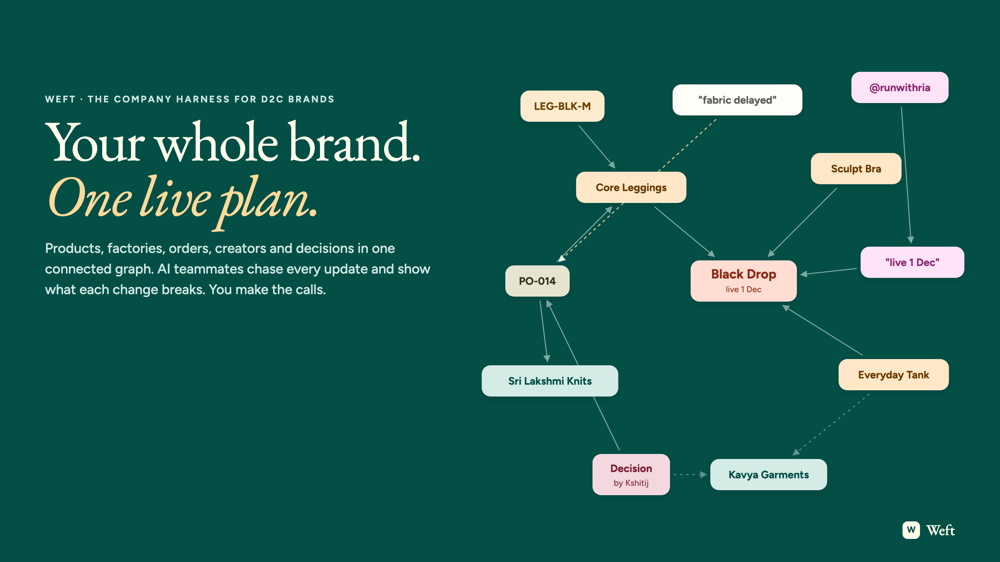
Running a D2C brand means running a hundred small loops at once. A collection gets planned, a factory makes it, creators announce it, the shop sells it, and the best sellers get reordered before they run out. Every one of those steps is simple. What breaks a brand is the space between them.
Weft is the company harness for D2C brands. It keeps one live plan of everything the brand makes and sells: products, suppliers, factory orders, stock, orders, creators and decisions, connected in a FalkorDB graph. Three AI teammates work on that plan all day, chasing updates and showing what every change breaks. The founder makes the calls.
See it live: weft.kshitijbhardwaj.space. Sign in with founder@blackdrop.in / blackdrop, and a guided tour walks you through the whole loop.
Watch the demo: the full story, end to end
Meet the brand
Kshitij runs a premium fitness-wear brand with a team of five. Their next collection, the Black Drop, is three styles in black and olive: Core Leggings, a Sculpt Sports Bra and an Everyday Tank. Fifteen SKUs, 2,100 units, launching on 1 December.
Two factories make it. Sri Lakshmi Knits in Tiruppur does the leggings and the bra; Kavya Garments in Bengaluru does the tanks. A mill in Surat supplies lab dips. Three fitness creators have their posts scheduled for 25 November: "The Black Drop, live 1 December."
It is a normal launch for a normal brand. Here is how it usually goes.
Every tool sees one part of the brand
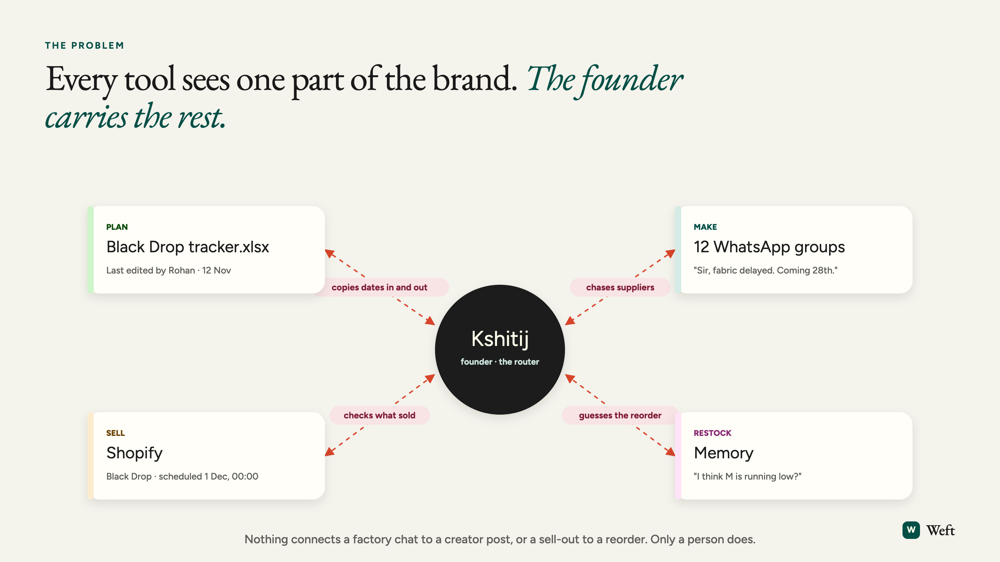
The production plan lives in a spreadsheet that Rohan last edited a week ago. The factories live in a dozen WhatsApp groups. Orders, refunds and discount codes live in Shopify. The reorder plan lives in Kshitij's head.
None of these tools are bad. They just each see one part of the brand. The only thing that connects a factory chat to a creator post, or a sell-out to a reorder, is the founder, copying facts from one place to another every day.
Three moments where brands lose money
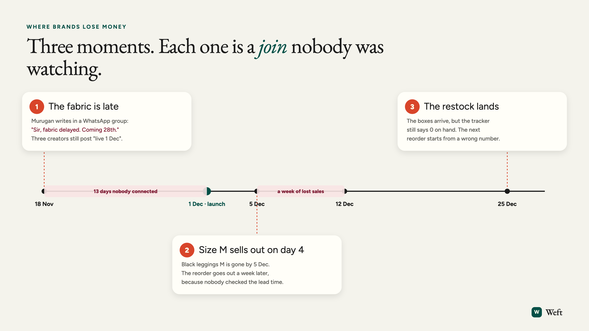
18 November. Murugan at Sri Lakshmi writes one line in a WhatsApp group: "Sir, fabric delayed. Coming 28th." It sits between forty other messages. The spreadsheet still says the leggings are on track, and three creators are about to tell their followers the drop goes live on 1 December.
5 December. Black leggings in size M sell out on day four. Nobody compares the sell rate with Kavya's ten-day lead time, so the reorder goes out a week later. That is a week of customers landing on a sold-out page.
25 December. The restock arrives. The boxes are in the warehouse, but the tracker still says zero on hand, so the next reorder starts from the wrong number.
Each moment is a join between two tools that nobody was watching. That is where brands lose launches, sales and trust.
One live plan for the whole brand
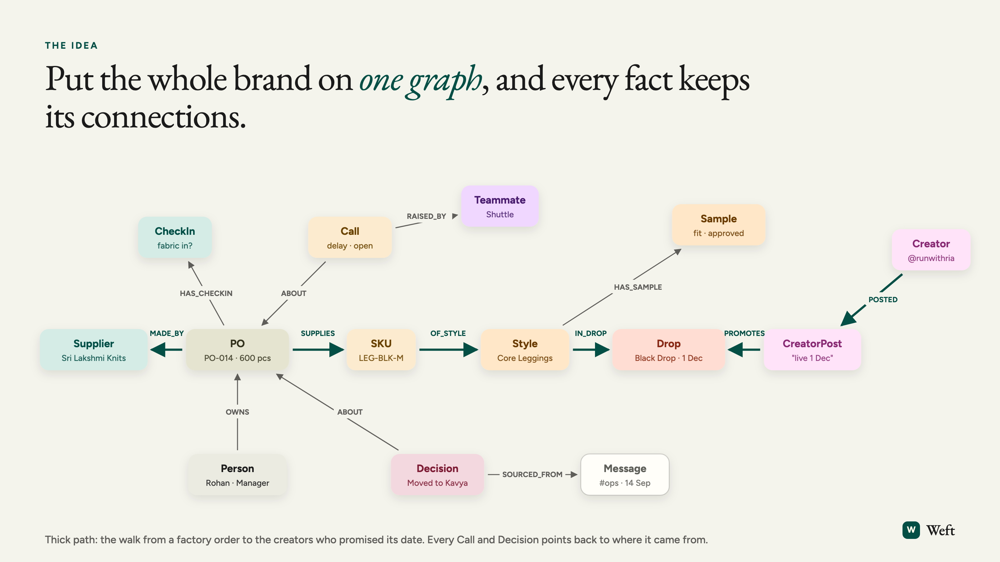
Weft puts the whole brand on one graph. A factory order is not a row in a sheet. It is a node connected to the supplier who makes it, the SKUs it supplies, the style and collection those SKUs belong to, the creator posts that promise the launch date, and the person who owns it. A check-in, a chat message, a call and a decision are nodes too, and each one points back to where it came from.
When every fact keeps its connections, the questions a brand actually asks become simple: which posts break if this order is late, which sizes run out before the next delivery, and why did we choose this supplier in the first place.
Three teammates, and you make the call
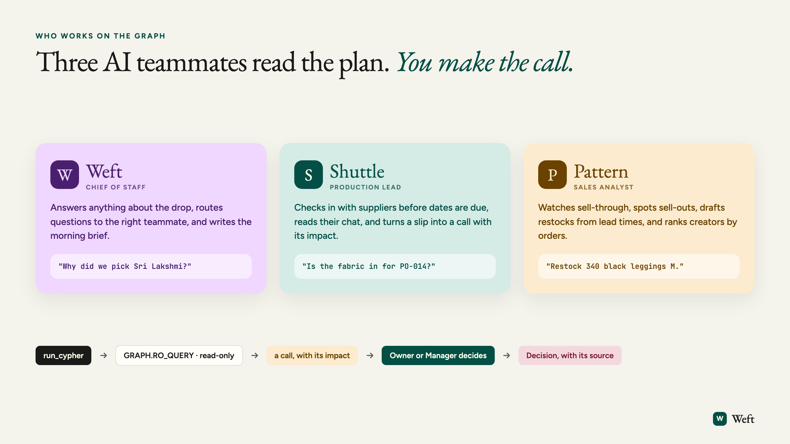
Weft comes with three AI teammates who work on the plan.
- Weft, the chief of staff, answers anything about the brand and routes questions to the right teammate.
- Shuttle, the production lead, checks in with suppliers before dates are due, reads their messages, and turns a slip into a call with its impact attached.
- Pattern, the sales analyst, watches sell-through and returns, spots sell-outs, drafts reorders from lead times, and ranks creators by the orders their codes drive.
You can talk to them like teammates: in their own chat, or by mentioning them in any thread. The teammates read the plan; they never change it on their own. When something needs a decision, they raise a call, and an Owner or Manager decides. Every answer comes with See why: the exact queries behind it, so nothing is a black box.
The same launch, run on Weft
Talk: every conversation is part of the plan
Weft is where the brand talks. Each supplier has a chat, the team has its channels, and each AI teammate has its own thread. Messages are not a side channel next to the plan. They are part of it.
When Murugan types "Cutting done for the olive leggings PO-017", the way he always would, Shuttle reads it and moves the order to Stitching on its own, linked back to his message. Nobody retypes anything into a tracker.
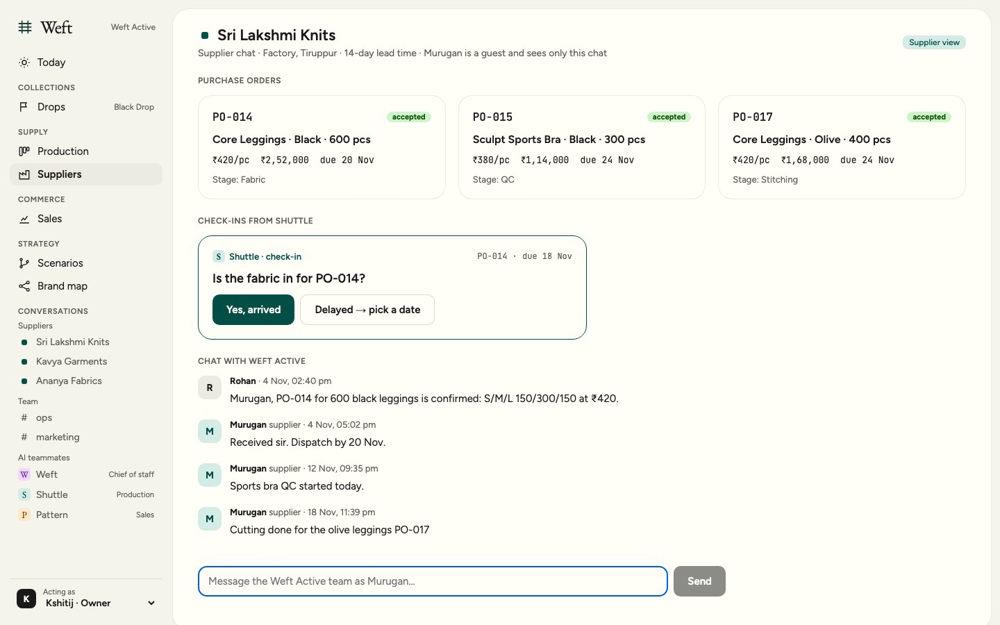
Kshitij can open Shuttle's thread and ask, in plain words, which factory orders could still put the launch at risk. Shuttle answers from the live plan, names the orders, and shows the queries behind the answer.
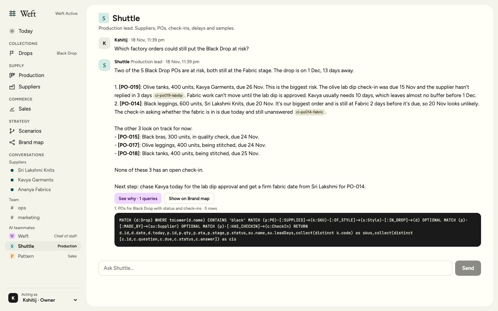
And in any team thread, tagging @weft, @shuttle or @pattern gets an answer in place, without leaving the conversation.
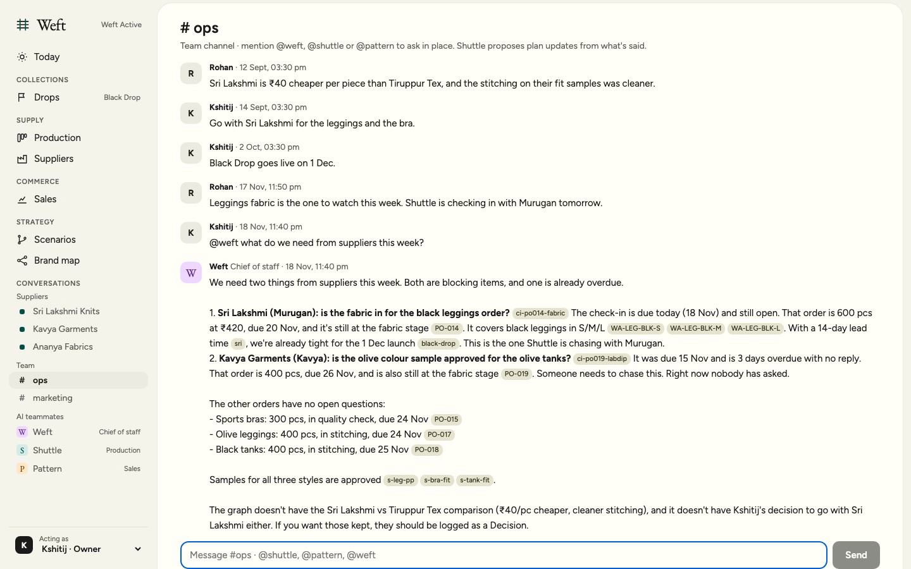
Make: the supplier slips, and the plan knows in seconds
Instead of a message lost in a group, Shuttle asks Sri Lakshmi a direct question before the fabric is due: is the fabric in for PO-014? Murugan sees only his own orders and answers in one tap: delayed, 28 November.

That answer becomes a fact on the graph, and Shuttle follows it through the plan: from the factory order, through the three leggings SKUs and the style, to the collection, and back out through every creator post that promises the date.
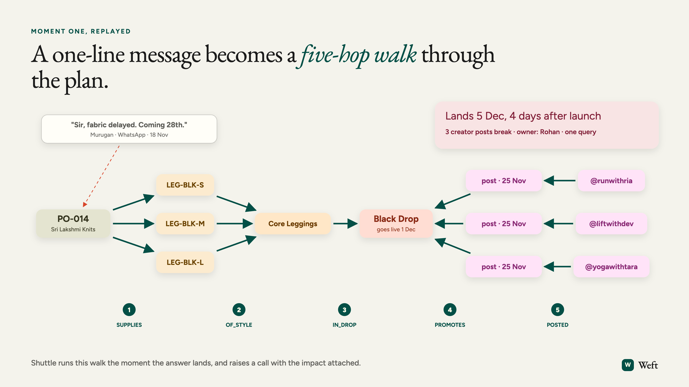
Kshitij does not find out on launch day. He finds out the same morning, on the Today screen, as a call from Shuttle: the leggings land on 5 December, four days after launch, and three creator posts break.
Decide: two futures, side by side
Before changing anything, Kshitij opens a scenario. Weft copies the entire plan into a private sandbox and moves PO-014 to Kavya Garments inside the copy only. Then it asks the same questions of both versions.
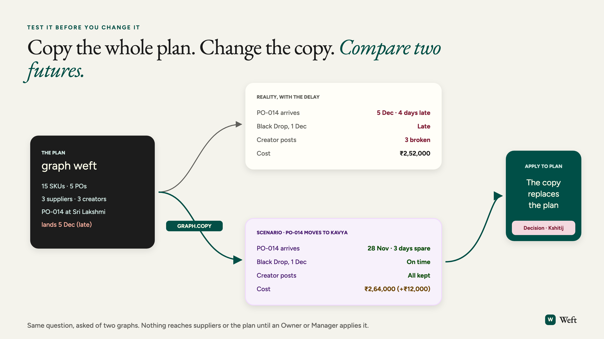
Stay with Sri Lakshmi and launch late with three broken creator posts. Or move to Kavya, land on 28 November with three days to spare, and keep every post, for ₹12,000 more. Kshitij applies the scenario. The order moves to Kavya, and the decision is recorded with who made it and why.

Sell: day nine, and the shop is on the same graph
The Black Drop launches on time. Nine days in, 62% of the collection has sold, ₹27.4 lakh in revenue. Orders, refunds and creator discount codes flow from the shop onto the same graph, so sales are never a separate dashboard. They sit right next to the factories that made the products.

The sell-through heatmap shows black leggings M sold out on day four. The olive tank is slow, and the returns all say the same thing, "too short", which Pattern traces back to a fit-sample note: body length −2 cm. The creator panel shows which codes drove orders and which customers came back.
Restock: from sell-out to stock on the shelf
Pattern does not wait for anyone to notice. It drafts the reorder from three numbers it already has: the sell rate, Kavya's lead time and the stock on hand.
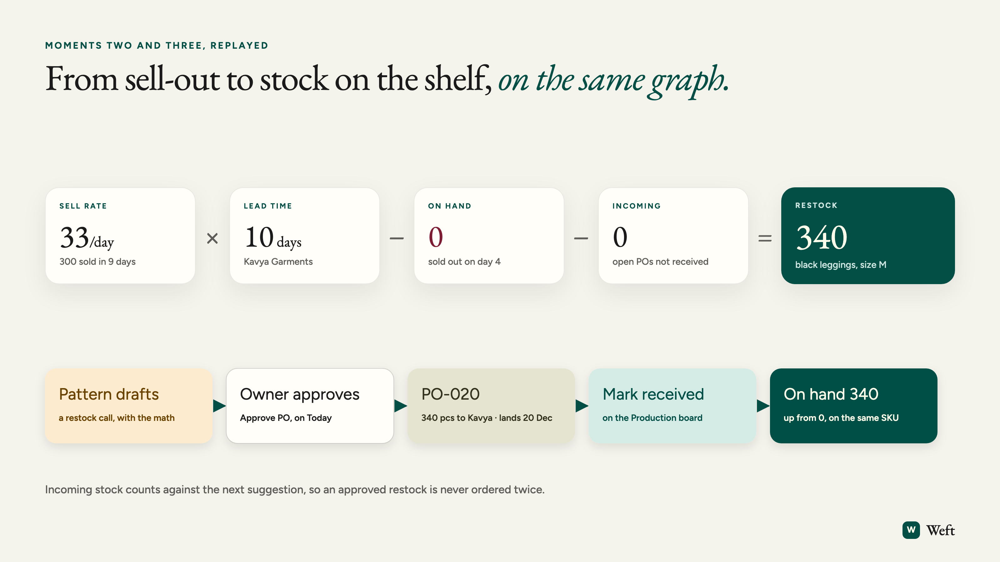
Thirty-three a day, times ten days, minus nothing on hand: 340 black leggings in size M. Kshitij approves it, and it becomes PO-020 to Kavya. Stock already on order counts against the next suggestion, so the same reorder is never placed twice. When the boxes arrive, the order is marked received and the stock is on the shelf again: 340 on hand, on the same SKU that sold out.

Learn: nothing decided is ever lost
Months later, someone asks why the leggings moved to Kavya, or why the brand chose Sri Lakshmi in the first place. The answer is not in someone's memory. Weft finds the decision, the messages it came from and the people who made it, and shows the path.

Why a graph
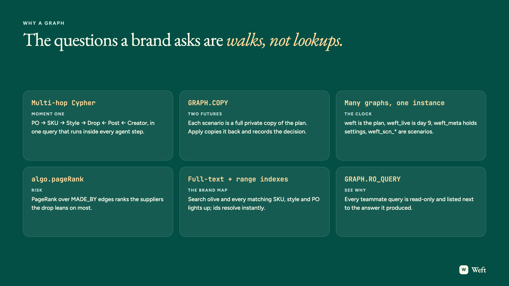
"Which creator posts break if PO-014 is late?" is not a lookup. It is a walk from a factory order, through its products and collection, and back out to the people promoting it. In a spreadsheet or a relational database, every such question needs its own hand-built join. In a graph, the walk is the query.
FalkorDB makes that walk fast enough to run inside every step a teammate takes. It also lets Weft keep many graphs side by side, so a scenario is simply a full copy of the brand's plan that can be compared with reality and applied in one move.
The loop, closed
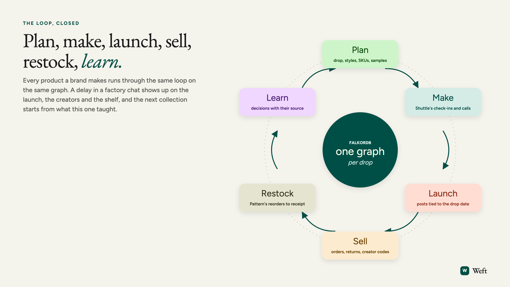
Plan, make, launch, sell, restock, learn. Every product a brand makes runs through the same loop, on the same graph. A delay in a factory chat shows up on the launch, the creators and the shelf, and the next collection starts from what this one taught.
That is what a company harness is: not another dashboard, but one live plan the whole brand runs on, with teammates that keep it current and a founder who only has to make the calls.
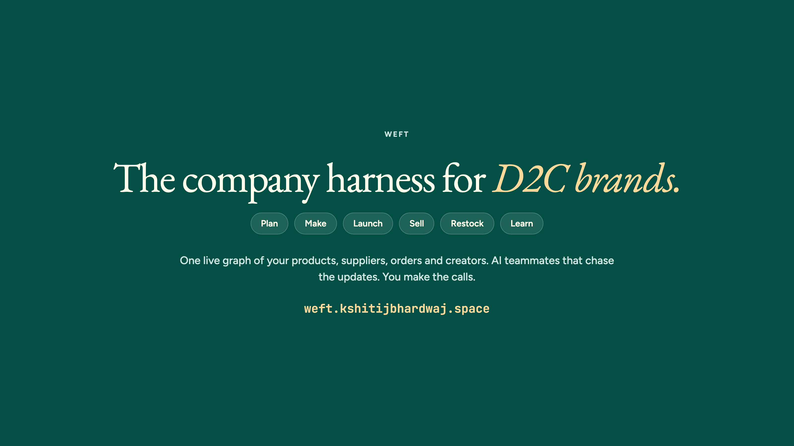
Try Weft: weft.kshitijbhardwaj.space · login founder@blackdrop.in / blackdrop
Watch the demo: weft.kshitijbhardwaj.space/weft-demo.mp4
Code: github.com/KshitijBhardwaj18/weft
Built for FalkorDB Graph Hacks.